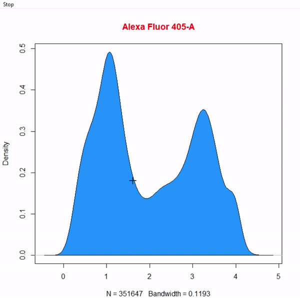
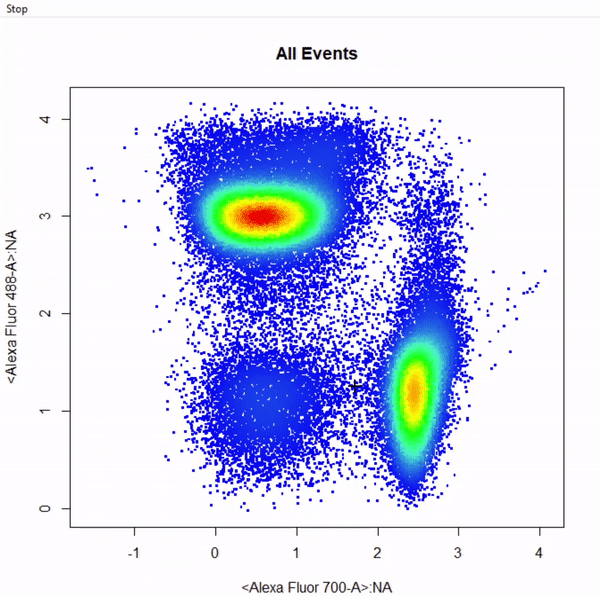

CytoRSuite: Gating Functions
Dillon Hammill
2019-02-11
Source:vignettes/CytoRSuite-Gating-Functions.Rmd
CytoRSuite-Gating-Functions.Rmd1. Introduction
CytoRSuite provides a variety of useful gating functions to interactively draw gates around populations for the analysis of flow cytometry data. Here we will demonstrate the use of these functions to return flowCore gate objects for downstream analyses. Below we outline the gating functions currently supported by CytoRSuite as well as their required inputs:
-
gate_polygon_draw- constructs polygonGate(s) based on selection of a minimum of 3 points. Polygon gates are sealed by right clicking and selecting “stop”. -
gate_rectangle_draw- constructs rectangleGate(s) based on selection of 2 diagonal points defining the limits of the gate. -
gate_boundary_draw- constructs a lower open-ended rectangleGate based on selection of 1 point indicating the upper bound of the population. Boundary gates are supported in both 1 and 2 dimensions. -
gate_threshold_draw- constructs an upper open-ended rectangleGate based on selection of 1 point indicating the lower bound of the population. Threshold gates are supported in both 1 and 2 dimensions. -
gate_interval_draw- constructs rectangleGate(s) based on selection of 2 points indicating the lower and upper bounds of the population. Interval gates are supported in both 1 and 2 dimensions. -
gate_ellipse_draw- constructs ellipsoidGate(s) based on selection of 4 points indicating the lower and upper bounds of the population in 2 dimensions. -
gate_quadrant_draw- constructs 4 open-ended rectangleGates based on selection of 1 point indicating the center of the crosshair between 4 populations. -
gate_web_draw- constructs any number of polygonGates based on selection of a center point and surrounding separating points. See below for demonstration. -
gate_drawis a wrapper for all of these gating functions which takes on an argumenttypeto indicate that type of gate to draw and construct.
2. Gating Arguments
All gating functions have the same format with minor variations as detailed below:
gate_draw(fr, channels, alias = NULL, display = 1, plot = TRUE, label = TRUE, …)
- type of gate to be drawn, possible options include “rectangle”, “polygon”, “threshold”, “boundary”, “interval”, “ellipse”, “quadrant” and “web”.
-
fr an object of class
flowFrameto be gated. For objects of classesflowSetandGatingSetrefer to the more versatilegate_drawfunction. - channels vector indicating the name(s) of the channel(s) to be used for gating.
- alias vector indicating the names of the population(s) to be gated. The length of the alias argument dictates the number of gates to construct. This argument MUST be supplied in order to construct the gates.
- axis used by drawInterval to specify whether the “x” or “y” axis should be used when constructing 2-D interval gates.
-
display numeric [0,1] indicating the percentage of events to display when plotting, set to all events by default. If the supplied value is greater than the total number of events in the
flowFrame, all events will be plotted. - plot logical indicating whether a plot should be constructed, set to TRUE by default. This argument can be used to turn off plotting when mixing gating functions as detailed later.
- label logical indicating whether population names and statistics should be added to the plot after gating, set to TRUE by default.
- … additional arguments passed to cyto_plot for plotting.
3. Demonstration of Gating Functions
To demonstrate the use of CytoRSuite’s gating functions we will use the “Activation” flowSet shipped with CytoRSuiteData. This flowSet contains 4 samples from an in vitro activation assay where activated dendritic cells pulsed with ovalbumin were used to stimulate OT-I (CD8+) and OT-II (CD4+) transgenic T cells. For more information about this flowSet see ?Activation.
3.1 Prepare Samples for Gating
# Load in required packages
library(CytoRSuite)
library(CytoRSuiteData)
# Load in Activation dataset
fs <- Activation
# Extract spillover matrix from flowFrame description slot - see ?computeSpillover ?editSpillover
spill <- fs[[1]]@description$SPILL
# Apply compensation to samples & save to object fs
fs <- compensate(fs, spill)
# Apply logicle transformation to all fluorescent channels
trans <- estimateLogicle(fs[[1]], colnames(spill))
fs <- transform(fs, trans)
# We will use the pooled samples for gating - for large datasets use display to limit events for plotting
fr <- as(fs, "flowFrame")
3.2 gate_polygon_draw
# Gate cells based on FSC-A & SSC-A - close gate by right click & "stop" - save gate to gts
gts <- gate_polygon_draw(fr, alias = "Cells", channels = c("FSC-A","SSC-A"))
3.3 gate_rectangle_draw
# Gate single cells by selecting 2 diagonal points of rectangle - add gate to gts
gts <- gate_rectangle_draw(Cells, alias = "Single Cells", channels = c("SSC-W","SSC-H"))
3.4 gate_boundary_draw
3.4.1 1-Dimensional Boundary Gate
# Gate live cells as Hoechst- Alexa Fluor 405-A - gate not applied to demonstrate 2-D boundary gates
gate_boundary_draw(Singlets, alias = "Cells", channels = "Alexa Fluor 405-A")

3.5 gate_threshold_draw


3.6 gate_interval_draw
3.6.1 1-Dimensional Interval Gate
# Gate Dendritic cells CD11c+ APC cy7 using 1D interval gate - gate not applied to demonstrate 2D interval gates
gate_interval_draw(Live, alias = "Dendritic Cells", channels = "APC-Cy7-A")

3.7 gate_ellipse_draw
# Gate CD8+ T cells using ellipsoid gate - gate not applied to demonstrate quadrant and web gates
gate_ellipse_draw(Va2, alias = "CD8 T Cells", channels = c("Alexa Fluor 700-A","Alexa Fluor 488-A"))
3.8 gate_quadrant_draw
# Gate CD4 & CD8 T cells using quadrant gates - gates not applied to demonstrate web gates
# Quadrant gates are named from bottom left anticlockwise to top left
gate_quadrant_draw(Va2, alias = c("CD4- CD8-","CD4+ CD8-","CD4+ CD8+","CD4+ CD8+"), channels = c("Alexa Fluor 700-A","Alexa Fluor 488-A"))
3.9 gate_web_draw
# Gate CD4 & CD8 T cells using web gates - gates not applied to demonstrate web gates
# Gates are named from bottom left anticlockwise to top left
gts <- gate_web_draw(Va2, alias = c("DN","CD4 T Cells","CD8 T Cells"), channels = c("Alexa Fluor 700-A","Alexa Fluor 488-A"))
4. Multiple Gates
# Gate CD4 & CD8 T cells using multiple rectangle gates - gates not applied
# Number of gates is determined based on how many populations are specified in "alias"
gate_rectangle_draw(Va2, alias = c("CD4 T Cells","CD8 T Cells"), channels = c("Alexa Fluor 700-A", "Alexa Fluor 488-A"))
5. Mixed Gates
# Gate CD4 & CD8 T cells using mixed gates - gates not applied
# Gating functions can be mixed by setting plot = FALSE for subsequent gates & keep plotting window open
gate_rectangle_draw(Va2, alias = "CD4 T Cells", channels = c("Alexa Fluor 700-A","Alexa Fluor 488-A"))
gate_ellipse_draw(Va2, alias = "CD8 T Cells", channels = c("Alexa Fluor 700-A","Alexa Fluor 488-A"), plot = FALSE)
3. More information
For more information on these gating functions refer to the documentation for these functions in the Reference. To learn more about how to edit and remove gates refer to Gate Manipulation vignette.